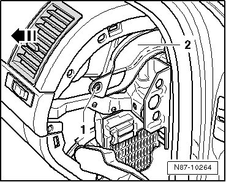
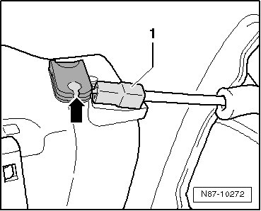

Air Register: Service and Repair
Side Instrument Panel Vents
Removing
- Remove side cover from instrument panel.

- Remove screw - 1 - and remove cover - 2 -.
- Press vents out of instrument panel - arrow -.

- Unclip retaining clip - 1 - and remove Bowden cable from actuator - arrow -.
Installation is carried out in the reverse order, when doing this note the following:
• Note Bowden cable routing.
• Bowden cable must not be installed kinked or twisted.